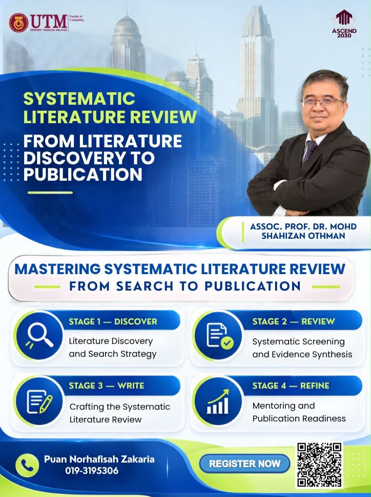

Prepare your 3 documents
Complete your SLR draft, quality assessment Excel file and PRISMA 2020 diagram. Check that the counts in all three match.
SLR Workshop 2026 · Selection for Stage 3 & 4
Participants of Stage 1 and Stage 2 who wish to continue to Stage 3 (16 December) and Stage 4 (17 December) must submit their SLR article draft, quality assessment Excel file and PRISMA 2020 diagram.
SLR Workshop 2026 · Selection for Stage 3 & 4
Thank you to everyone who submitted their Stage 1 & 2 documents. The secretariat is reviewing all submissions and will contact the selected participants directly. Stage 3 takes place on 16 December and Stage 4 on 17 December 2026.
SLR Workshop 2026 · 16–17 December
Selected participants: open the guided workspace for today’s stage and save your outputs in the portfolio as you work.
2026 Progressive SLR Workshop
The 2026 programme is complete. All four stages, tools and templates remain available to support your review through to journal submission.

How to submit
Complete your SLR draft, quality assessment Excel file and PRISMA 2020 diagram. Check that the counts in all three match.
Upload each file to Google Drive or OneDrive. Set access to Anyone with the link · Commenter and copy each link.
Verify yourself with the Matric / Staff No. and email you registered with, paste the three links and submit. Keep your reference number.
What to submit
Word or Google Docs.
Excel or Google Sheets.
PDF, image or Word.
Questions
Participants registered for Stage 1 and Stage 2 (Cohort 1 or Cohort 2). Use the same Matric / Staff No. and email you registered with.
No. Places in Stage 3 and Stage 4 are by selection, based on the completeness and quality of the three documents. The secretariat will contact selected participants.
Yes, before the deadline. Submit the form again with the same details; only your latest submission is reviewed. Do not edit your files after the deadline.
Google Drive, Google Docs or Sheets, and OneDrive or SharePoint. Make sure anyone with the link can open and comment on each file.
No. The form closes automatically at 5:00 PM on 30 November 2026 (Malaysia time), and the time recorded by the server is final.
Selected participants
Learning journey
The programme is organised around the systematic review process rather than around individual AI tools.
Literature discovery, research questions, keywords, databases and reproducible search strategy.
Explore Stage 1 →Protocol, deduplication, screening, PRISMA, quality assessment and extraction.
Explore Stage 2 →Evidence synthesis, research gaps, tables, figures and manuscript drafting.
Explore Stage 3 →Manuscript review, journal matching, reporting compliance and submission readiness.
Explore Stage 4 →A substantially completed Systematic Literature Review manuscript prepared towards journal submission.